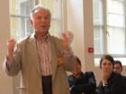

ПОЕЗДКА В БУДУЩЕЕ

... и порой забывали:
то ли в Ди мы, то ли в Шеки
или Карабахе, то ли в Кахетии
или окрестностях Севана...
ни слова о войне, ведь мы
находимся в будущем,
но помним, ощущаем кожей,
что она идёт (или была вчера?)
Городок Ди на юге Франции. Типично кавказские пейзажи: зелёные холмы, за ними – горы, на вершинах – поступь туманов, собираются, сливаясь, точно живые, с тучами. Виноградники, речушка с мостиками через неё, ущелья, ухоженные поля, плантации. Прямо наше Закавказье, но… цивилизованное: чистые дома, ухоженные холмы, уютные аккурат улицы. В «бабье лето» нас, по дюжине посланцев Азербайджана, Армении и Грузии (а я – из Москвы), на десять дней пригласили в Ди на Фестиваль «Восток – Запад», он по счёту 17-й, на сей раз – Южно-кавказский, до нас были поволжский, сибирский, польский и т.д..
Обширная, на множество красочных страниц программа встреч и выступлений коллективных, индивидуальных. Оплачены расходы, исполняются наши пожелания… Вдруг озарение: нет, вовсе не на фестиваль нас пригласили, нам – не чудо ли? - предложили ненадолго приехать… в будущее, т.е. оказаться в ситуации нормальных кавказских отношений (и быта!), испытать прелесть современной жизни вообще и творческой в особенности – без дрязг, конфликтов, каких бы то ни было притязаний друг к другу, без кровопролития, оскорбительных выпадов, откровенной ненависти.
Все дни, помимо «деловых» встреч, - постоянные общения друг с другом за застольем, а это обед и ужин (завтракаем в домах, где каждого бесплатно разместили: хозяева считают для себя честью предоставить гостям не только отдельную уютную комнату, и но и завтрак), длинные столы уставлены яствами, в том числе, кавказскими – шашлыком, долмой, в кувшинах несут и несут молодое красное вино собственного производства… Перед нами за речкой на той стороне высился зелёный холм, и порой забывали: то ли в Ди мы, то ли в Шеки или Карабахе, то ли в Кахетии или окрестностях Севана. Однажды примкнули к нам, явились в гости к южным кавказцам чеченцы со своей кухней, - ни слова о войне, ведь мы находимся в будущем, но помним, ощущаем кожей, что она идёт (или была вчера?).
Улицы и витрины городка обвешаны синими флажками Фестиваля, в котором участвует почти весь Ди. Специально приехали, заполонив гостиницы, французы из других частей страны – проявляют интерес к проблемам Кавказа. Поспешили сюда, движимые ностальгией, и наши земляки, живущие во Франции: немало армян, мощная у них диаспора здесь, внимательны к нам, почтительны и заботливы, есть грузины и среди них учёный Гастон Буачидзе, который в год развала СССР приехал сюда, выдержав по конкурсу право учить французов …французской литературе в университете; с ним – всепонимающая и чуткая жена Светлана. Опекает нас азербайджанка Айтен, которая здесь стажируется; из Валенса приехала тоскующая по азербайджанским мелодиям Диана Салаева, педагог по вокалу… Никакой «идеологической» корысти, «политической» выгоды – лишь пожелание (и Общественного совета Фестиваля, и мэрии, радушно нас принявшей в одном из своих роскошных залов), чтобы встретились, посостязались в искусстве пера, слова, кисти, звуков, показали мастерство наших древних народов. Концерты, фильмы, выставки... Театр превратился в кавказское кабаре… «Круглые столы» в зале мэрии по вопросам творчества, о новых веяниях в литературе, синтезе искусств, об изданиях книг и журналов, по проблемам перевода друг друга, о совместных проектах. Выступления в лицеях с обсуждением вышедших во Франции книг наших авторов.
Встреча талантливых: армянского прозаика Ваграма Мартиросяна, чей роман «Оползни» вышел и в переводе на азербайджанский, с Алекпером Алиевым, чьи художественные сочинения и острая публицистика приобрели широкую популярность в Азербайджане – он один из признанных зачинателей «новой прозы», хлёсткой, правдивой, нелицеприятной. А вот новые поэты, тоже неординарные, как можно судить по тому, как они читали стихи и переводчики сожалели, что не могут отразить их образную систему, оттенки и нюансы, - грузин Шота Иаташвили и армянка Виолетта Григорян, переехавшая в Армению из Ирана, она прекрасно знала фарси, но не знала русского, так что её речь переводили с армянского на русский, чтобы понимали мы, и на французский, чтобы понимали остальные.
Виртуозно пела мугамы Алмаз Оруждева в трио «Карабахские соловьи» (тар – Рафик Рустамов, кеманча – Марказ Алиев), а потом к трио присоединился великолепной игрой на уде живущий во Франции Марк Лупуйт (у него в Лионе собрана уникальная коллекция восточных инструментов, говорит на азербайджанском, даже… принял ислам!).
Араик Бартикян под сводами Аббатства Валькруассан извлекал из дудука такие звуки, что было ощущение – божественные мелодии нисходят на нас сверху.
Ансамбль грузин – это сёстры Нино и Миму Джанджгава и браться Давид и Георгий Хоситашвили, каждый из которых универсален: певец, играет на флейте, пианино, скрипке, гитаре, грузинских инструментах саламури и стварию, - погружал нас в красочно-мистический мир народных и современных мелодий, а однажды за застольем все мы запели с ними вечную песню «Сулико», которую в советские годы знала вся страна.
Поистине великий «кендирбаз»-канатоходец Эдмон Аветисян, стройный, высокий, прямой, как жердь, творил чудеса: подпрыгивал и садился на канат, чтобы снова вознестись над ним, ехал по нему на велосипеде, взбирался на лестницу, восседал на табуретке… и с каждым новым рискованным трюком маленькая городская площадь взрывалась возгласами восторга… Потом мы сидели под навесом за длинным столом, готовясь к вечерней трапезе, рядом со мной оказался канатоходец, и я вдруг ошарашил его: «А я видел за вашей спиной верёвку!» Он тут же вскричал: «Нет!», в глазах загорелось недоумение, вот-вот заплачет от чудовищной несправедливости. Ко мне тотчас подскочили армяне с возмущением: «Какая верёвка?!» «А я, - говорю, - верёвку видел!» Но тут же неожиданно для них добавил: «С неба была спущена верёвка, это была поддержка Всевышнего». Канатоходец заулыбался, и мы вспомнили слова Иисуса: каждый может пройти пешком по морю, если в нём сильна вера.
… Сольное выступление знаменитого азербайджанского пианиста Шахина Новраслы, о ком много слышал, но ни разу, увы, не слушал. Новый жанр джаз-мугама, впервые открытый легендарным Вагифом Мустафа-заде и – потом, после того, как услышу игру Шахина, пойму – поднят им на качественно новый уровень.
На сцене двое – он и рояль. Сначала существуют порознь, потом начинается диалог между пальцами и клавишами. Далее… - шквал, ураган, взрыв звуков, причудливые их комбинации, от которых зал сотрясается. Я вижу процесс слияния человека с инструментом, а потом… что вытворяет исполнитель?! Ещё недавно он был реальным человеком с наивными глазами, несколько стеснительный и скованный, а теперь он – нечто неземное, человек-миф, единственно-неповторимое создание. Даже рояль не представлял, какие возможности в нём таятся, на что он способен, какие из него можно выжать комбинации звуков. Казалось, нет уже у рояля сил выдавать мелодии, а исполнитель, точно обретя новое дыхание, возносится с роялем во вселенские сферы, которые вне людского разумения…
И все дни – выставки современного визуального искусства, поистине буйство цветовых и линейных фантазий, игра колористики, синтез видео и живописи. Поиск средств для выражения реальности – окрыляющей и подавляющей, угнетающей и дающей надежду, столкновение вечности и мига, путешествия по воображаемым городам, дабы найти себя-песчинку в мироздании, неповторимую свою индивидуальность. Хочу назвать – это для меня открытие – хотя бы азербайджанских дизайнеров художников, понимая при этом, что обозначения их профессий неполны, условны, а новые определения для их творческой деятельности ещё не найдены: мой тёзка Чингиз, он так и представляется, Теймур, чей псевдоним или подлинная фамилия Даими, или «Вечный», Орхан Гусейнов… У каждого из них – свой почерк, о каждом – надо особо… Али Гасанов, например, профессиональный певец, а инсталяцию свою разыграл, завернувшись в струящийся чёрным, будто нефтяная масса, материал, и никак не выскочить, не вырваться из него на волю, обрести свободу: нефть – образ Азербайджана, и не поймёшь, в этом богатстве счастье для народа или беда, польза или вред… А потом мы сидели во дворе, каменные скамьи, как что-то незыблемое с языческих времён, солнце клонилось к осени, будучи ещё щедрым, жарким, спасительная тень от деревьев, нас окружающих, и беседа – внезапная в своей искренности, откровенности…
А какая была для меня радость встретиться с переводчиком романа «Магомед, Мамед, Мамиш» Иваном Миньо через… двадцать два года после издания в Париже романа.
… Чувствую, что пора завершать заметки, ибо слышу: идиллическая картина! телячьи восторги!.. Ну да, отрицать не стану: во-первых, таланты, о которых пишу, реальны, никаких выдумок. А во-вторых… но как иначе писать о будущем, куда я попал всего лишь на короткое, увы, время? Вряд ли б я говорил в подобной стилистике о настоящем, омрачённом… - тут.
P.S. Почти на следующий день после нашего возвращения из будущего узналось новое понятие, обогатившее мой словарный запас: «грузинофобия». Грузины – вот кто, оказывается, повинны в криминале, нищете «коренного» (слово-динамит, а то и канистра, полная бензина, - плеснуть, где очажок межэтнического конфликта, чтоб воспылал на всю страну!) населения, разгуле коррупции… - вписались грузины в постоянно обновляемый список «виновных» этносов: были евреи, крымские татары, постоянно для всех на одном полюсе – чеченцы, на другом – американцы, у армян – турки, у азербайджанцев – армяне, у прибалтов (и не только!) – русские, а теперь вот грузины, хотя уже были в рядах «внешнего врага» в 50-е, даже злой анекдот был сочинён: «Один грузин – весельчак-кинто, два грузина – 1937 год, а три… - не приведи Бог!»
Вирус опасен тем, что сразу заражает массы, толпа становится неуправляемой, уже не спасают последующие разъяснения, что «не так поняли про коренных», что речь о явлении социальном, что «грузин» – вроде бы метафоры беспредела: кто-то из жрецов подсказал, вся массовая информация разом заменила «грузина» на абстрактное «этнос», но это так туманно и неопределённо, а первое – вот он, конкретен, сразу узнаешь по усам, цвету кожи, носу, выговору…. Вспомнил, как в советские годы, дабы погасить ропот татар и монголов, дескать, «иго» к ним отношения не имеет, нашли ёмкую замену: «ордынское иго», - хорошо тогда развивалась идеологическая фразеология, настала пора перенимать опыт. А вообще-то стремление привязать социальное к этническому – качество позорное, анормальное.
… Твержу себе: кончилась идиллия, не забывай, что ты уже в настоящем, а не будущем, но непременно помни о нём, эй Ч.Г., помни постоянно, чтобы не скатиться в прошлое – каменный век.
Чингиз Гусейнов
16-10-06
Обширная, на множество красочных страниц программа встреч и выступлений коллективных, индивидуальных. Оплачены расходы, исполняются наши пожелания… Вдруг озарение: нет, вовсе не на фестиваль нас пригласили, нам – не чудо ли? - предложили ненадолго приехать… в будущее, т.е. оказаться в ситуации нормальных кавказских отношений (и быта!), испытать прелесть современной жизни вообще и творческой в особенности – без дрязг, конфликтов, каких бы то ни было притязаний друг к другу, без кровопролития, оскорбительных выпадов, откровенной ненависти.
Все дни, помимо «деловых» встреч, - постоянные общения друг с другом за застольем, а это обед и ужин (завтракаем в домах, где каждого бесплатно разместили: хозяева считают для себя честью предоставить гостям не только отдельную уютную комнату, и но и завтрак), длинные столы уставлены яствами, в том числе, кавказскими – шашлыком, долмой, в кувшинах несут и несут молодое красное вино собственного производства… Перед нами за речкой на той стороне высился зелёный холм, и порой забывали: то ли в Ди мы, то ли в Шеки или Карабахе, то ли в Кахетии или окрестностях Севана. Однажды примкнули к нам, явились в гости к южным кавказцам чеченцы со своей кухней, - ни слова о войне, ведь мы находимся в будущем, но помним, ощущаем кожей, что она идёт (или была вчера?).
Улицы и витрины городка обвешаны синими флажками Фестиваля, в котором участвует почти весь Ди. Специально приехали, заполонив гостиницы, французы из других частей страны – проявляют интерес к проблемам Кавказа. Поспешили сюда, движимые ностальгией, и наши земляки, живущие во Франции: немало армян, мощная у них диаспора здесь, внимательны к нам, почтительны и заботливы, есть грузины и среди них учёный Гастон Буачидзе, который в год развала СССР приехал сюда, выдержав по конкурсу право учить французов …французской литературе в университете; с ним – всепонимающая и чуткая жена Светлана. Опекает нас азербайджанка Айтен, которая здесь стажируется; из Валенса приехала тоскующая по азербайджанским мелодиям Диана Салаева, педагог по вокалу… Никакой «идеологической» корысти, «политической» выгоды – лишь пожелание (и Общественного совета Фестиваля, и мэрии, радушно нас принявшей в одном из своих роскошных залов), чтобы встретились, посостязались в искусстве пера, слова, кисти, звуков, показали мастерство наших древних народов. Концерты, фильмы, выставки... Театр превратился в кавказское кабаре… «Круглые столы» в зале мэрии по вопросам творчества, о новых веяниях в литературе, синтезе искусств, об изданиях книг и журналов, по проблемам перевода друг друга, о совместных проектах. Выступления в лицеях с обсуждением вышедших во Франции книг наших авторов.
Встреча талантливых: армянского прозаика Ваграма Мартиросяна, чей роман «Оползни» вышел и в переводе на азербайджанский, с Алекпером Алиевым, чьи художественные сочинения и острая публицистика приобрели широкую популярность в Азербайджане – он один из признанных зачинателей «новой прозы», хлёсткой, правдивой, нелицеприятной. А вот новые поэты, тоже неординарные, как можно судить по тому, как они читали стихи и переводчики сожалели, что не могут отразить их образную систему, оттенки и нюансы, - грузин Шота Иаташвили и армянка Виолетта Григорян, переехавшая в Армению из Ирана, она прекрасно знала фарси, но не знала русского, так что её речь переводили с армянского на русский, чтобы понимали мы, и на французский, чтобы понимали остальные.
Виртуозно пела мугамы Алмаз Оруждева в трио «Карабахские соловьи» (тар – Рафик Рустамов, кеманча – Марказ Алиев), а потом к трио присоединился великолепной игрой на уде живущий во Франции Марк Лупуйт (у него в Лионе собрана уникальная коллекция восточных инструментов, говорит на азербайджанском, даже… принял ислам!).
Араик Бартикян под сводами Аббатства Валькруассан извлекал из дудука такие звуки, что было ощущение – божественные мелодии нисходят на нас сверху.
Ансамбль грузин – это сёстры Нино и Миму Джанджгава и браться Давид и Георгий Хоситашвили, каждый из которых универсален: певец, играет на флейте, пианино, скрипке, гитаре, грузинских инструментах саламури и стварию, - погружал нас в красочно-мистический мир народных и современных мелодий, а однажды за застольем все мы запели с ними вечную песню «Сулико», которую в советские годы знала вся страна.
Поистине великий «кендирбаз»-канатоходец Эдмон Аветисян, стройный, высокий, прямой, как жердь, творил чудеса: подпрыгивал и садился на канат, чтобы снова вознестись над ним, ехал по нему на велосипеде, взбирался на лестницу, восседал на табуретке… и с каждым новым рискованным трюком маленькая городская площадь взрывалась возгласами восторга… Потом мы сидели под навесом за длинным столом, готовясь к вечерней трапезе, рядом со мной оказался канатоходец, и я вдруг ошарашил его: «А я видел за вашей спиной верёвку!» Он тут же вскричал: «Нет!», в глазах загорелось недоумение, вот-вот заплачет от чудовищной несправедливости. Ко мне тотчас подскочили армяне с возмущением: «Какая верёвка?!» «А я, - говорю, - верёвку видел!» Но тут же неожиданно для них добавил: «С неба была спущена верёвка, это была поддержка Всевышнего». Канатоходец заулыбался, и мы вспомнили слова Иисуса: каждый может пройти пешком по морю, если в нём сильна вера.
… Сольное выступление знаменитого азербайджанского пианиста Шахина Новраслы, о ком много слышал, но ни разу, увы, не слушал. Новый жанр джаз-мугама, впервые открытый легендарным Вагифом Мустафа-заде и – потом, после того, как услышу игру Шахина, пойму – поднят им на качественно новый уровень.
На сцене двое – он и рояль. Сначала существуют порознь, потом начинается диалог между пальцами и клавишами. Далее… - шквал, ураган, взрыв звуков, причудливые их комбинации, от которых зал сотрясается. Я вижу процесс слияния человека с инструментом, а потом… что вытворяет исполнитель?! Ещё недавно он был реальным человеком с наивными глазами, несколько стеснительный и скованный, а теперь он – нечто неземное, человек-миф, единственно-неповторимое создание. Даже рояль не представлял, какие возможности в нём таятся, на что он способен, какие из него можно выжать комбинации звуков. Казалось, нет уже у рояля сил выдавать мелодии, а исполнитель, точно обретя новое дыхание, возносится с роялем во вселенские сферы, которые вне людского разумения…
И все дни – выставки современного визуального искусства, поистине буйство цветовых и линейных фантазий, игра колористики, синтез видео и живописи. Поиск средств для выражения реальности – окрыляющей и подавляющей, угнетающей и дающей надежду, столкновение вечности и мига, путешествия по воображаемым городам, дабы найти себя-песчинку в мироздании, неповторимую свою индивидуальность. Хочу назвать – это для меня открытие – хотя бы азербайджанских дизайнеров художников, понимая при этом, что обозначения их профессий неполны, условны, а новые определения для их творческой деятельности ещё не найдены: мой тёзка Чингиз, он так и представляется, Теймур, чей псевдоним или подлинная фамилия Даими, или «Вечный», Орхан Гусейнов… У каждого из них – свой почерк, о каждом – надо особо… Али Гасанов, например, профессиональный певец, а инсталяцию свою разыграл, завернувшись в струящийся чёрным, будто нефтяная масса, материал, и никак не выскочить, не вырваться из него на волю, обрести свободу: нефть – образ Азербайджана, и не поймёшь, в этом богатстве счастье для народа или беда, польза или вред… А потом мы сидели во дворе, каменные скамьи, как что-то незыблемое с языческих времён, солнце клонилось к осени, будучи ещё щедрым, жарким, спасительная тень от деревьев, нас окружающих, и беседа – внезапная в своей искренности, откровенности…
А какая была для меня радость встретиться с переводчиком романа «Магомед, Мамед, Мамиш» Иваном Миньо через… двадцать два года после издания в Париже романа.
… Чувствую, что пора завершать заметки, ибо слышу: идиллическая картина! телячьи восторги!.. Ну да, отрицать не стану: во-первых, таланты, о которых пишу, реальны, никаких выдумок. А во-вторых… но как иначе писать о будущем, куда я попал всего лишь на короткое, увы, время? Вряд ли б я говорил в подобной стилистике о настоящем, омрачённом… - тут.
P.S. Почти на следующий день после нашего возвращения из будущего узналось новое понятие, обогатившее мой словарный запас: «грузинофобия». Грузины – вот кто, оказывается, повинны в криминале, нищете «коренного» (слово-динамит, а то и канистра, полная бензина, - плеснуть, где очажок межэтнического конфликта, чтоб воспылал на всю страну!) населения, разгуле коррупции… - вписались грузины в постоянно обновляемый список «виновных» этносов: были евреи, крымские татары, постоянно для всех на одном полюсе – чеченцы, на другом – американцы, у армян – турки, у азербайджанцев – армяне, у прибалтов (и не только!) – русские, а теперь вот грузины, хотя уже были в рядах «внешнего врага» в 50-е, даже злой анекдот был сочинён: «Один грузин – весельчак-кинто, два грузина – 1937 год, а три… - не приведи Бог!»
Вирус опасен тем, что сразу заражает массы, толпа становится неуправляемой, уже не спасают последующие разъяснения, что «не так поняли про коренных», что речь о явлении социальном, что «грузин» – вроде бы метафоры беспредела: кто-то из жрецов подсказал, вся массовая информация разом заменила «грузина» на абстрактное «этнос», но это так туманно и неопределённо, а первое – вот он, конкретен, сразу узнаешь по усам, цвету кожи, носу, выговору…. Вспомнил, как в советские годы, дабы погасить ропот татар и монголов, дескать, «иго» к ним отношения не имеет, нашли ёмкую замену: «ордынское иго», - хорошо тогда развивалась идеологическая фразеология, настала пора перенимать опыт. А вообще-то стремление привязать социальное к этническому – качество позорное, анормальное.
… Твержу себе: кончилась идиллия, не забывай, что ты уже в настоящем, а не будущем, но непременно помни о нём, эй Ч.Г., помни постоянно, чтобы не скатиться в прошлое – каменный век.
Чингиз Гусейнов
16-10-06